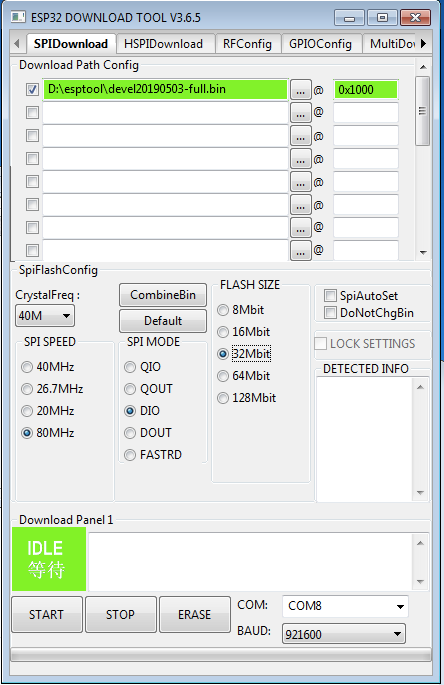

Browser‑based flash tool
If your browser does not support WebSerial, you can use the command‑line or Windows GUI options below.
You can flash rdzTTGOsonde via the browser-based web flash
tool, the esptool.py command‑line utility, or Espressif’s
Windows Flash Download Tool.
When using a supported browser (Chrome/Edge/Opera), the ESP32 web flash tool can program the TTGO board directly from this page.
If your browser does not support WebSerial, you can use the command‑line or Windows GUI options below.
For first time installation, if you prefer the CLI.
Flashing a full image writes the application, the fonts, and the internal filesystem. This overwrites all configuration stored in flash.
esptool --chip esp32 --baud 921600 \
--before default_reset --after hard_reset write_flash -z \
--flash_mode dio --flash_freq 80m --flash_size detect \
0x1000 <filename.bin>0x1000 for the full image.<filename.bin> with the downloaded firmware image.--port <port> to select a specific device (e.g. COM1: on Windows or /dev/cu.SLAB_USBtoUART on macOS).
If you only want to update the application code and keep your
existing internal file system contents, flash update.bin at
0x10000:
esptool --chip esp32 --port /dev/cu.SLAB_USBtoUART --baud 921600 \
--before default_reset --after hard_reset write_flash -z \
--flash_mode dio --flash_freq 80m --flash_size detect \
0x10000 update.binThis only updates the firmware; the internal file system is left unchanged. OTA does more: it applies the same code update and then selectively updates some files in the internal file system while keeping your config — prefer OTA when the device is on the network. Layout changes in newer versions may not apply with code-only flashing; see the versioning notes on the Downloads page.
For users who prefer a graphical tool on Windows, Espressif provides a Flash Download Tool. The UI is older, but the correct offsets are crucial.
You can download the GUI tool from Espressif: Flash Download Tools (Espressif).
Select your binary file, then set the same offsets as in the
esptool.py example above (for example
0x1000 for full images, 0x10000 for
update.bin).

First boot, Wi‑Fi setup, and accessing the web UI.
http://rdzsonde.local/, depending on your setup).